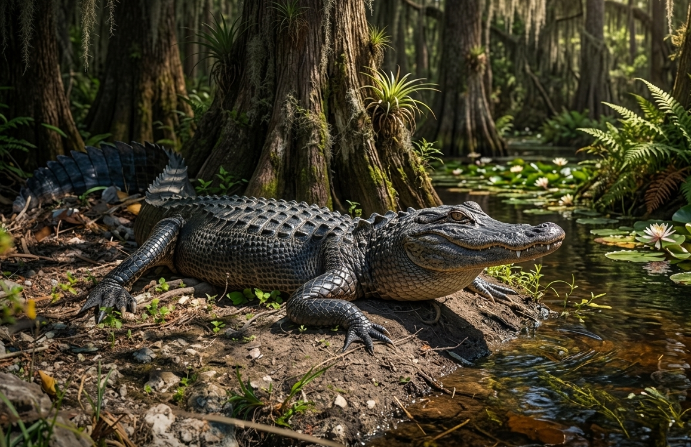
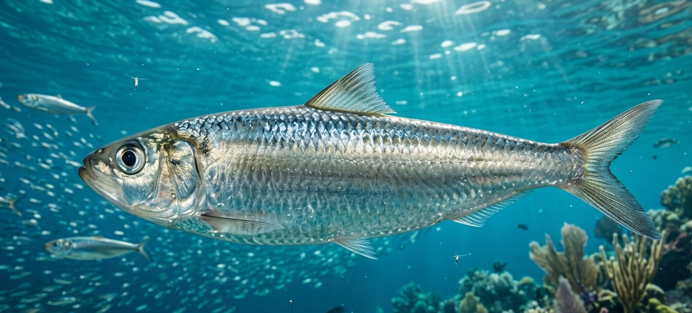

Philippine Fauna
Life Across the Archipelago
From rainforest predators to deep-sea ghosts, from iridescent reef fish to ancient insects — the Philippines harbours one of the most extraordinary concentrations of animal life on Earth.
Philippine Fauna
From rainforest predators to deep-sea ghosts, from iridescent reef fish to ancient insects — the Philippines harbours one of the most extraordinary concentrations of animal life on Earth.
From the world's most powerful raptor to iridescent sunbirds of the Cordillera cloud forests — 706 recorded species, 238 found nowhere else on Earth.
Explore Birds
167 native species, 102 endemic — from the world's smallest primate to giant cloud rats of the Luzon highlands and critically endangered bovids of Mindoro.
Explore Mammals
340 reptile species, 187 endemic — spitting cobras, water-walking lizards, heat-sensing pit vipers, and one of the world's most endangered crocodilians.
Explore Reptiles
The Philippines anchors the Coral Triangle — the most biodiverse marine ecosystem on Earth, with 915 fish species and over 500 coral species.
Explore Marine
21,000+ insect species, 70% endemic — giant moths, birdwing butterflies, synchronised fireflies, and 110+ endemic tiger beetle species.
Explore Insects
281 freshwater fish species, 67 endemic — from Taal Lake's one-of-a-kind sardine to highland stream gobies found on a single mountain.
Explore Freshwater
Prehistoric giants, modern extinctions, and miraculous rediscoveries — twelve species that define what the Philippines has lost and what it still fights to keep.
Explore Lost SpeciesConservation
The Philippines has lost over 70% of its original forest cover. Every species documented here depends on urgent collective action — from habitat protection to community-led conservation.
Select a group above to explore species.